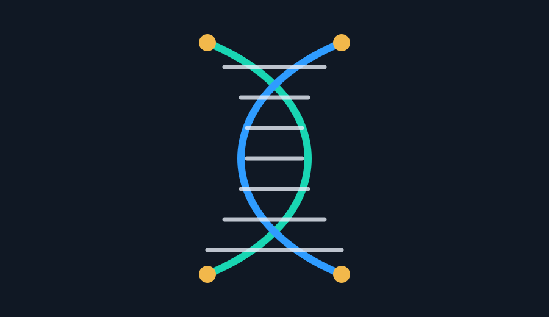
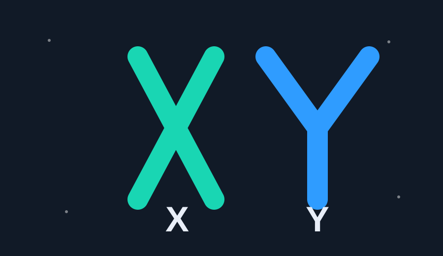

ADN & kodi gjenetik
Zbulimi i ADN-së na ka treguar se njeriu është i programuar që në momentin e parë të fekondimit. Kurani e përshkruan këtë "programim" mahnitës me një saktësi absolute.
Lexo Artikullin5 tema të përzgjedhura.

Zbulimi i ADN-së na ka treguar se njeriu është i programuar që në momentin e parë të fekondimit. Kurani e përshkruan këtë "programim" mahnitës me një saktësi absolute.
Lexo Artikullin
Zbulimi gjenetik që faktori mashkullor është ai që përcakton gjininë e foshnjës, është një e vërtetë e deklaruar shprehimisht në Kuran shekuj përpara mikroskopëve.
Lexo Artikullin
QuranMiracles e trajton krijimin e njeriut nga balta dhe uji jo si një figurë të zbrazët, por si një ftesë për të parë përbërjen materiale të trupit dhe rolin themelor të ujit në çdo qelizë të gjallë.
Lexo ArtikullinQuranMiracles e lidh ajetet për ujin me faktin biologjik se qelizat, indet dhe organizmat varen nga uji si mediumi kryesor i jetës.
Lexo Artikullin
QuranMiracles e lexon ajetin për krijimin në çifte si një vërejtje mbi botën bimore, njeriun dhe modele të tjera të rendit të krijimit që shkenca i zbuloi më vonë.
Lexo Artikullin